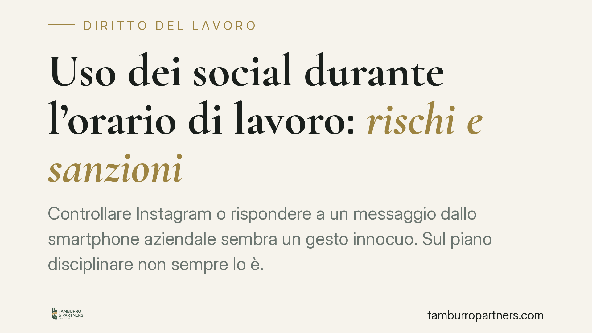

Uso dei social durante l'orario di lavoro: rischi e sanzioni
Controllare Instagram o rispondere a un messaggio dallo smartphone aziendale sembra un gesto innocuo. Sul piano disciplinare non sempre lo è. La gravità dipende da frequenza, impatto sulla prestazione e regole interne. Il licenziamento resta l'extrema ratio e richiede una valutazione caso per caso, come conferma la giurisprudenza di legittimità.

Il quadro normativo
L'uso dei social in orario di lavoro tocca anzitutto gli obblighi del lavoratore. L'art. 2104 cod. civ. impone la diligenza nell'esecuzione della prestazione; l'art. 2105 cod. civ. fissa l'obbligo di fedeltà. La distrazione ricorrente sui social può violare entrambi, sottraendo tempo ed energie alla prestazione dovuta.
Sul versante sanzionatorio, l'art. 2106 cod. civ. non descrive le singole condotte punibili: enuncia il principio di proporzionalità, per cui la sanzione disciplinare deve essere commisurata alla gravità dell'inadempimento rispetto agli obblighi degli artt. 2104 e 2105. È questa la chiave di lettura di ogni contestazione: la reazione datoriale non può essere sproporzionata rispetto al fatto.
Rilevano poi due presidi dello Statuto dei lavoratori. L'art. 7 della legge 300/1970 subordina la validità delle sanzioni all'affissione del codice disciplinare in luogo accessibile e al rispetto del contraddittorio. L'art. 4, come riformato dal d.lgs. 151/2015 (Jobs Act), disciplina i controlli sugli strumenti di lavoro e sui dati raccolti.
Quando scatta la sanzione (e quando il licenziamento)
Non ogni accesso ai social integra un illecito disciplinare rilevante. La valutazione è graduale.
Per i casi meno gravi la risposta tipica è il rimprovero verbale o scritto, la multa o la sospensione. Il licenziamento presuppone qualcosa di più.
Occorre distinguere due figure. La giusta causa (art. 2119 cod. civ.) è l'inadempimento tanto grave da non consentire la prosecuzione neppure provvisoria del rapporto: intacca in modo irreversibile il vincolo fiduciario. Il giustificato motivo soggettivo (art. 3, legge 604/1966) è un inadempimento notevole ma meno radicale, che consente il preavviso.
Nell'uso dei social il discrimine passa per alcuni criteri operativi:
- la gravità oggettiva: pochi minuti sporadici pesano diversamente da un uso sistematico che paralizza la prestazione;
- la recidiva: una condotta già contestata e reiterata aggrava il giudizio;
- l'elemento fiduciario: la diffusione di contenuti offensivi verso l'azienda o la divulgazione di notizie riservate incrinano la fiducia più del semplice tempo sottratto;
- l'impatto sull'efficienza e su terzi (clienti, sicurezza, immagine).
La Cassazione ha più volte ribadito che la valutazione va condotta in concreto (cfr. Cass. civ., sez. lav., ord. 4 febbraio 2019 — estremi da verificare presso il repertorio ufficiale). Non esistono automatismi: lo stesso fatto può giustificare una multa o un licenziamento a seconda del contesto.
Controlli e utilizzabilità delle prove
Quando la prova dell'uso improprio deriva da dati aziendali, entra in gioco la disciplina sulla protezione dei dati: il Regolamento UE 2016/679 (GDPR) e il d.lgs. 196/2003, come modificato dal d.lgs. 101/2018.
I controlli sugli strumenti di lavoro devono rispettare l'art. 4 dello Statuto: informativa preventiva sulle modalità d'uso e sui controlli, rispetto dei principi di liceità, proporzionalità e minimizzazione. Dati raccolti in violazione di tali regole rischiano di essere inutilizzabili in giudizio, indebolendo la posizione datoriale.
Implicazioni pratiche
Per il lavoratore, l'uso disinvolto dei social non è un dettaglio: può fondare una contestazione e, nei casi gravi, il licenziamento. Per il datore, la sanzione regge solo se ancorata a regole scritte, conosciute e applicate con coerenza.
Cosa fare in concreto
Per il lavoratore:
- Verifica il regolamento aziendale e il codice disciplinare affisso, così da conoscere i limiti effettivi.
- In caso di contestazione, esercita entro i termini il diritto di difesa e presenta giustificazioni scritte.
- Fatti assistere prima di rendere dichiarazioni che possano aggravare la posizione.
Per il datore:
- Formalizza per iscritto le regole d'uso di dispositivi e social e affiggi il codice disciplinare ex art. 7 St. lav.
- Predisponi l'informativa sui controlli conforme all'art. 4 St. lav. e al GDPR.
- Applica la sanzione in modo proporzionato e uniforme, documentando gravità e precedenti.
Conclusione
L'uso dei social in orario di lavoro si colloca in una zona grigia governata dal principio di proporzionalità. La regolamentazione interna chiara e i controlli conformi alla normativa privacy sono la condizione perché eventuali sanzioni siano legittime ed efficaci.
Contributo informativo a cura di Tamburro & Partners Avvocati - Avv. Giuseppe Tamburro. Non costituisce parere legale.
Ogni storia di lavoro ha i suoi tempi.
Se gestisci HR e vuoi un confronto su contenzioso, ispezioni o licenziamenti, scrivi allo studio. Ti rispondiamo entro un giorno lavorativo.